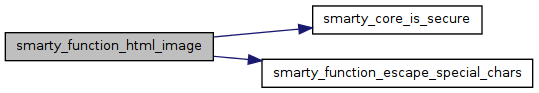

Пространства имен | |
| namespace | Smarty |
Функции | |
| smarty_function_html_image ($params, &$smarty) | |
Функции
| smarty_function_html_image | ( | $ | params, | |
| &$ | smarty | |||
| ) |
Smarty {html_image} function plugin
Type: function
Name: html_image
Date: Feb 24, 2003
Purpose: format HTML tags for the image
Input:
- file = file (and path) of image (required)
- height = image height (optional, default actual height)
- width = image width (optional, default actual width)
- basedir = base directory for absolute paths, default is environment variable DOCUMENT_ROOT
- path_prefix = prefix for path output (optional, default empty)
Examples: {html_image file="/images/masthead.gif"} Output:

{html_image} (Smarty online manual) Monte Ohrt
- Версия:
- 1.0
- Аргументы:
-
array Smarty
- Возвращает:
- string smarty_function_escape_special_chars()
См. определение в файле function.html_image.php строка 37
Граф вызовов:
